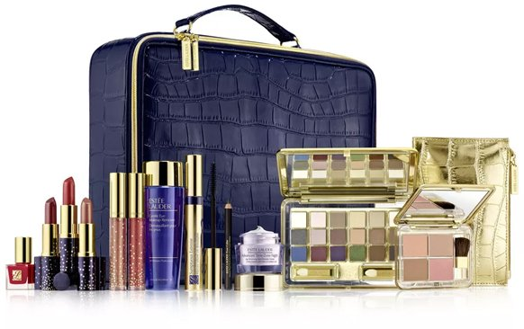
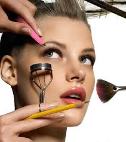

Моя косметика / Волшебный чемоданчик
 Профессиональный визажист должен быть с косметикой на «ты». Благодаря опыту работы, посещениям мастер-классов мне удалось попробовать многое из косметических продуктов разного сегмента и качества. Я регулярно слежу за новинками и тщательно подхожу к выбору косметики и инструментов для работы с дорогими клиентами. Для своей работы выбираю только качественные, стойкие и проверенные косметические штучки класса проф и люкс. В моём арсенале: Косметика для визажа: Estee Lauder, HudaBeauty, Yves Saint Laurent, Clarins, Stilla, MAC, Atelier, Zoeva, BeautyDrugs, ProMakeupLab, Ardell, Tammy Tanuka, Paese, Dior, NYX, Sleek, Inglot, Elan, Felix Shtain. Инструменты и стайлинги для волос: утюжок и плойка Babyliss, гофре Infinity, Schwarzkopf Professional, Estel, Brelil.
Услуги стилиста-визажиста
Если вам необходим профессиональный стилист-визажист в Киеве – обратитесь на сайт. Нужен стилист по прическам в Киеве? Здесь вы сможете заказать создание целостного уникального образа для торжественного мероприятия или фотосьемки. Какие преимущества вас ожидают? Прежде всего, это профессиональный подход к делу, а также: Помощь в подборе образа – вы можете быть уверены в том, что ваш мейк-ап и укладка будут не только модными, но и подчеркнут ваши достоинства, создав гармоничный и целостный облик; Индивидуальный подход – учитываются как пожелания клиента, так и особенности кожи и структуры волос. Каждый человек – индивидуален и уникален, поэтому нельзя к каждому клиенту применять один и тот же подход. Вы можете быть уверены, что мейк-ап будет соответствовать вашему типу кожи, а укладка – особенностям структуры волос. Все это поможет вам ощущать себя на высоте! Использование только качественной косметики – укладка и макияж в Киеве невозможны без использования средств, которые отвечали бы всем современным требованиям в вопросе качества и безопасности. В работе мастер задействуются исключительно профессиональные средства. Они гарантируют клиенту не только ожидаемый яркий результат и устойчивость макияжа или созданной прически, но и безопасность для здоровья кожи и волос. Следование тенденциям в сфере красоты – вы можете быть уверены в том, что наш мастер сможет воплотить в жизнь именно тот популярный мейк-ап или креативную прическу, которые вам приглянулись. Отслеживание актуальных трендов, а также своевременное обучение новым техникам, дает нашему мастеру существенное преимущество перед остальными. Все вышесказанное подтверждено опытом множества женщин и девушек, которые обратились за услугами к Анастасии Степуре! Личный подход, чувство стиля и умение подобрать гармоничный образ с использованием современных тенденций – всё это поможет вам выглядеть безупречно в особенный для вас день!